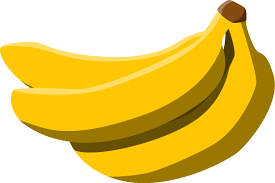

ii) Bananas
Yellow Bananas are my fruit because they are naturally sweet and very nutricious.
Their soft texture makes them easy to eat on the go.
Plus bananas are rich in potassium which is great for maintaining good health.